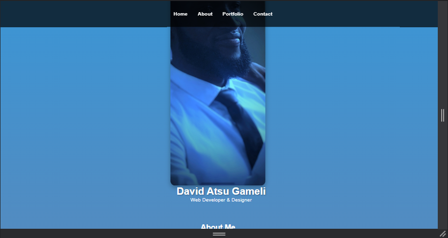
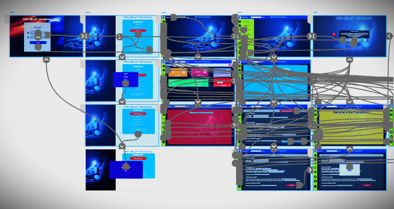
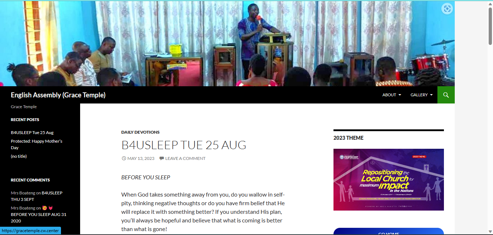

Welcome to my portfolio, a curated collection of my journey through the realms of design and development. Here, I showcase a blend of web projects, visual design creations, and more, offering a glimpse into my creative endeavors and the skills that power them.
Each project you'll find below represents a unique challenge I've embraced, a canvas where I've woven together code, creativity, and innovation. From crafting interactive websites that engage and inform, to breathing life into digital art with graphic design, I'm excited to share my diverse skill set with you.Explore these creations, witness the thought process behind them, and perhaps catch a glimpse of the passions that drive me forward. Whether it's the meticulous lines of code or the vibrant strokes of a digital brush, every element here tells a story – my story.
Web Development (HTML, CSS, JavaScript):
Crafting immersive digital experiences using the building blocks of the web – HTML, CSS, and JavaScript. With a passion for clean code and seamless functionality, I bring ideas to life in the browser, ensuring responsiveness and user-friendly interactions..
HTML Project: Building a Personal Portfolio
This project showcases my proficiency in HTML and CSS. I designed and developed a personal portfolio website to demonstrate my skills, experience, and projects. The website utilizes modern web design principles and is fully responsive across different devices.
You are free to check it out at davie270.github.io/myportfolio.
My Portfolio
A Creative and Responsive Portfolio Website.
CSS Project: Creative Styling for a Website
In this project, I focused on advanced CSS techniques to style a blog website. I implemented complex layouts, used CSS animations to enhance user experience, and practiced CSS flexbox and grid for responsive design. This project demonstrates my ability to create visually appealing and functional websites.
It can be accessed at davie270.github.io/myportfolio.
Prototyping and Wireframing using Adobe XD:

Transforming concepts into tangible designs with precision and creativity using Adobe XD. From initial wireframes that define structure to interactive prototypes that showcase functionality, I visualize and iterate on user interfaces to create intuitive and engaging experiences..
If you're curious about how the interactive design comes together, you can experience the prototype firsthand by clicking here.
Wireframing using Adobe XD:
Prototyping Password Reset using Adobe XD:
If you're curious about how the interactive design comes together, you can experience the prototype firsthand by clicking here.
Prototyping Login interface using Adobe XD:
If you're curious about how the interactive design comes together, you can experience the prototype firsthand by clicking here.
Talk about giving back! Leveraging my skills, I orchestrated a digital space for Grace Temple Church at gracetemple.cw.center. This platform serves as a hub, connecting the congregation and offering them easy access to important information. It's a testament to the power of web development to foster connections.
Grace Temple Church Website
Designed and developed a website for Grace Temple Church, providing an online hub for congregation members to access information and connect.
Talk about giving back! Leveraging my skills, I orchestrated a digital space for Grace Temple Church at gracetemple.cw.center. This platform serves as a hub, connecting the congregation and offering them easy access to important information. It's a testament to the power of web development to foster connections.
David Atsu Gameli's Portfolio
"Crafting Digital Dreams, One Line of Code at a Time ... "

Feel free to reach me at gamelidd270@gmail.com.
Contact: +233594757649 | +233240095459